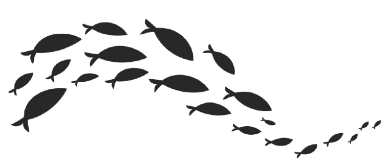
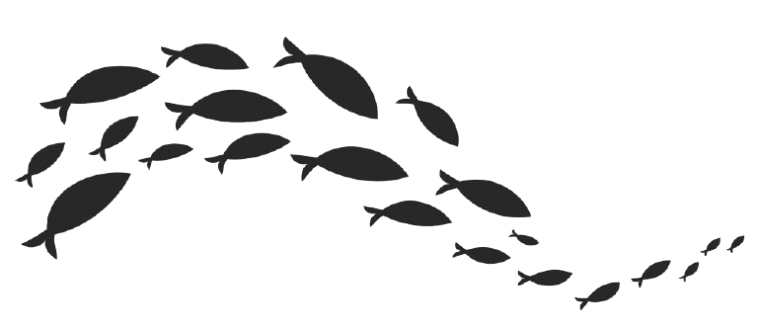
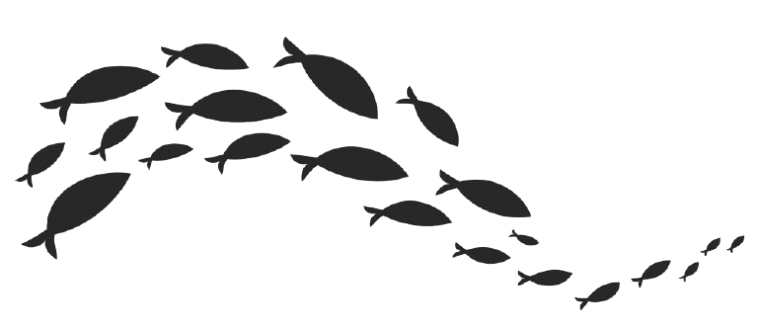
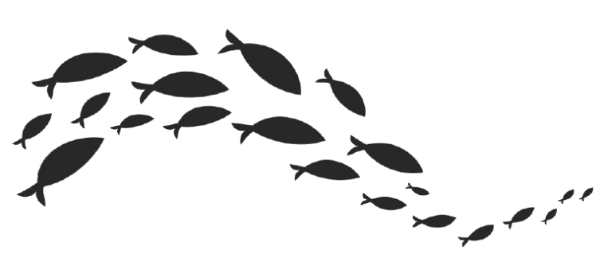

Nuestra primera vez en Bahía Solano, Colombia.
Se hizo el primer ensayo de logística trayendo pesca fresca de Bahía Solano.
En la pandemia se hizo el segundo ensayo trayendo pescados y mariscos.
Se fundó el grupo WILD-CATCH COLOMBIA realizando múltiples viajes de pesca durante el año.
El grupo fundó WILD-CATCH FISH MARKET, empezando con distribución de pescados y mariscos en Antioquia, Colombia.
Empezó la distribución a nivel nacional y se logró alcanzar las metas pronosticadas.
Continuó el crecimiento y se creó el centro de acopio en Bahía Solano.
Nuestro propósito en WILD-CATCH Fish Market es liderar la industria de la pesca de manera sostenible, priorizando la conservación de los océanos y la equidad social en las comunidades pesqueras. Nos comprometemos a ofrecer productos del mar de alta calidad obtenidos de forma ética y respetuosa con el medio ambiente, garantizando un futuro saludable para nuestros océanos y generaciones venideras.
Nuestra misión es generar oportunidades en Bahía Solano para contribuir a su desarrollo económico y social, ya que es un territorio con grandes necesidades y a la vez con una riqueza única natural, como sus ecosistemas, sus paisajes, su fauna marina y terrestre.
Ser líderes en la pesca sostenible y expandir nuestra comunidad alrededor del mundo. Teniendo siempre en cuenta la sostenibilidad y la responsabilidad con el medio ambiente generando un imapcto positivo con las comunidades pesqueras.